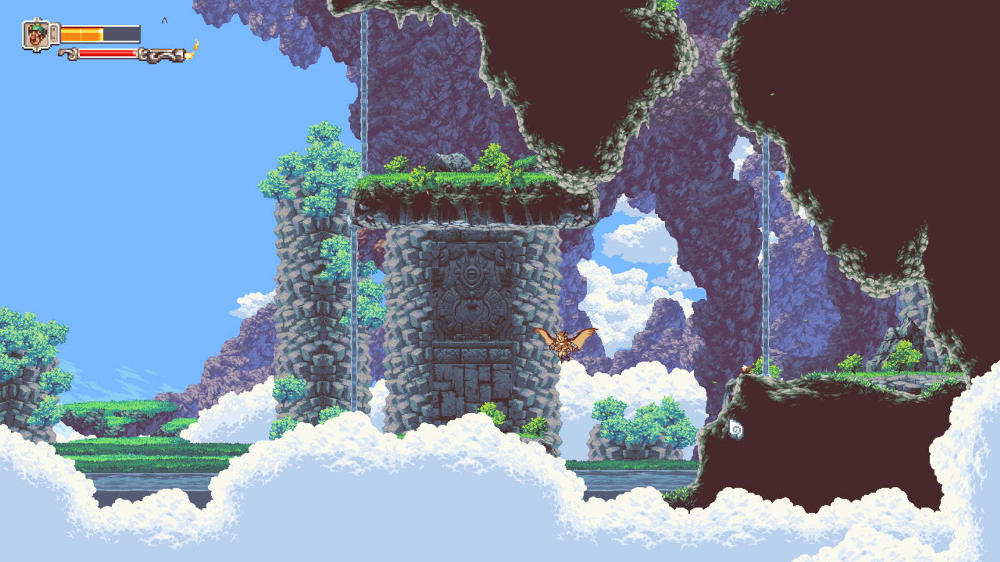
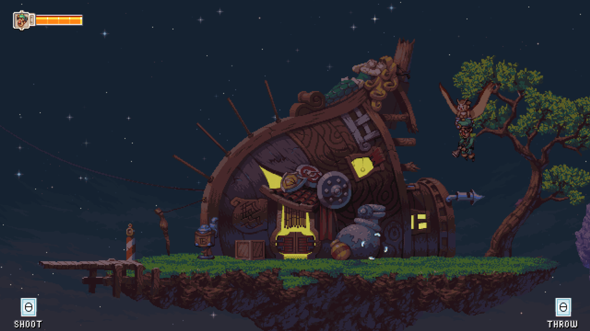
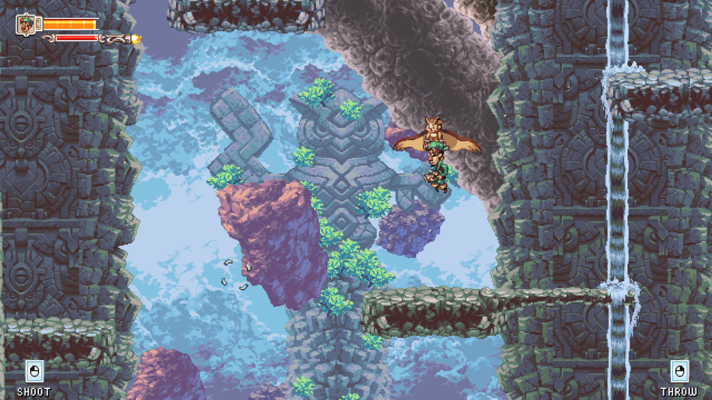
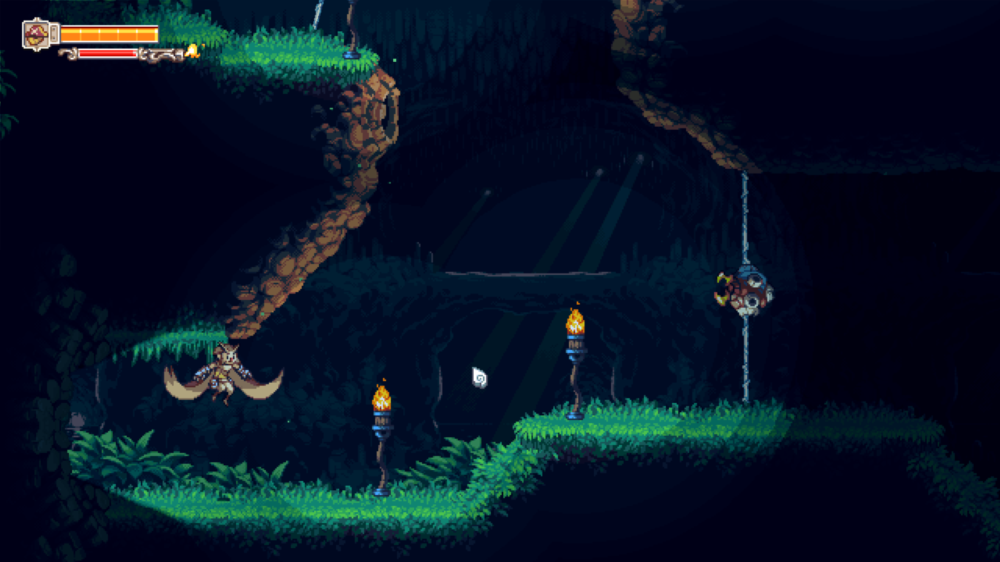
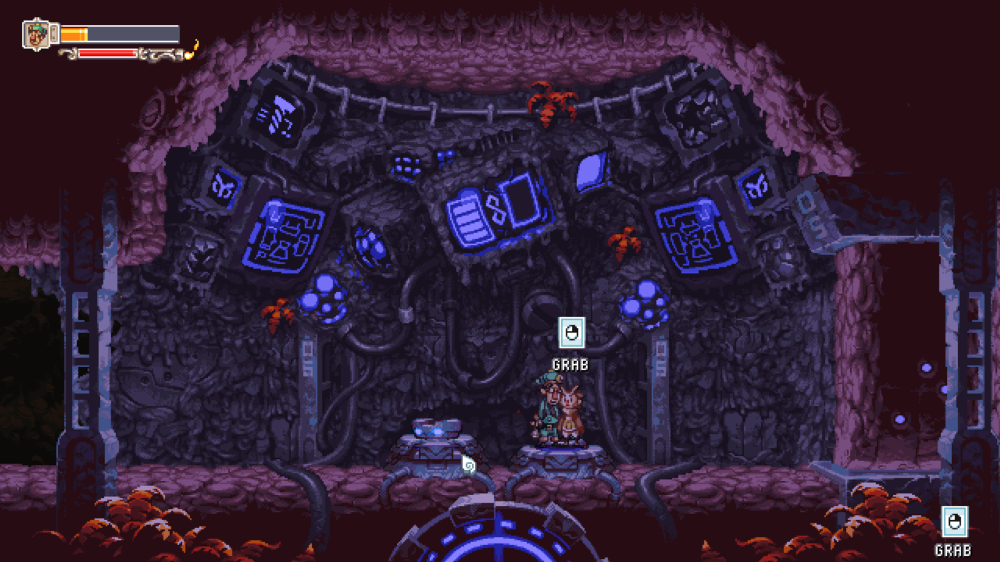
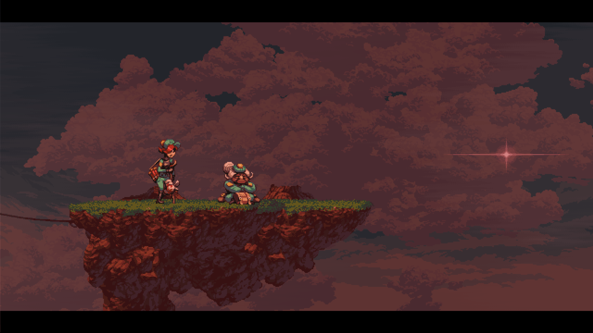

Inevitable is Fate; unmissable is Destiny
A review of D-Pad Studio's video game Owlboy. Includes a few screenshots.
Personal rating: 5/5
Do you remember the feeling of emptiness after reaching the end of a book, a film, a game? A longing for a world behind the screen, between the pages? Some call it “post-fiction depression”; others call it “electronic heartbreak”. Those who experience this longing are doomed to return and relive the story, sometimes hoping to lose all memory of it in order to see everything as if it's the first time.
This is how I feel after playing Owlboy.
Owlboy is an adventure game where you control an owl boy named Otus, a student marginalized and bullied for his inability to speak and poor skills. As sky pirates raid the peaceful town of Vellie, Otus sets out to collect allies, track down the pirates, and stop them from burning down the world.
As a platformer with a main character that flies, the game provides players with a relatively sparse and empty map and hidden objects. Despite the linear storyline, the map is relatively free to explore at any time, and the game is sometimes counted as “Metroidvania” as a result.

Owlboy immerses the player into a world of rich colors and a diverse cast; the moderately-sized world map and a relaxed story pace allows exploration of all areas. After a few dawns and dusks tinting the canvas of the skies, and a couple bonfire nights with teammates, I felt like a native of this world.
The beauty of the world amazed me so much that I often paused to take screenshots. This is what a decade of honest work looks like: vibrant scenes with different shades during day and night, crafted animation adding life to everything, all accompanied by emotional soundtracks.

But the part that stayed with me the most, after beating the game, was the story. The plot of an underdog gaining friendship and confidence while saving the world sounds like a cliché, and is simple enough to fit into a summer's dream. Yet it worked for me: a simpler story is better at evoking emotions.
As a struggling student even looked down upon by his own teacher, the only friends you have on your battles are other marginalized people from different societies, forming a Ragtag Bunch of Misfits. As the game goes on, you will find increasingly hard levels that can only be solved by a specific teammate, or by combining their strengths. As is confirmed explicitly by creators during a GDC talk, “friendship” is a core theme throughout the game.

The game is fairly standard when it comes to level design, introducing each enemy in a friendly way, showing its behavior first, and gradually increasing in number. Boss fights may appear impossible to beat (especially for lightweight gamers), but are quite easy once you realize the trick for each one. This moderate difficulty adds another layer to the enjoyment of the game: forcing the player to actively beat the game allows one to understand the weight of the story, in a way that is hard to replicate in traditional media.

As the narrative moves on, you will gradually be exposed to the Owl Civilization, a glorious era of Owl history whose only remnants are the ruins and temples half-covered by weeds — and fragments of historical records you will find throughout the game. Many concepts are (likely intentionally) left vague, creating a sense of mystery and determinism — as if the Owls of the olden days have never left us. Ghibli lovers may see a shadow of classics such as Castle in the Sky and Spirited Away in the game.
It is unnatural to discuss this game without mentioning its well-balanced tone. Despite its lovable figures and colorful scenes, the game retains a shade of darkness: With a peaceful world under the threat of Pirates, every sunrise can be a harbinger of fears, and every sunset one of sorrows. Characters can be seen sad, angry, or collapsing in pain at certain points. But Otus — or rather, the player — moves on, as is determined by Fate, or Destiny, both within and without the game.

“The Chosen One” is a common trope in storytelling; it may be justified by some backstory or simply “a prophecy”, or rely on suspension of disbelief in order to work. In the case of Owlboy, the story never gave a hard justification, but slowly established why the story must be so.
As a student, Otus was expected to become a pillar for the dwindling society of Owls, and is naturally fated to be a scout, messenger, or a guard. But he is also destined to gather allies, fire-forged friends, along the way, and to learn and accept the glory and shame of the Owls, and eventually, driven by responsibility and necessity, to meet his true fate, or destiny, at the end of the game.
At the end of 10+ hours of gameplay, I would say Owlboy is a highly enjoyable experience, one I would absolutely return to in the future. It may not be for everyone, but if you like hand-crafted, well-polished pixel art stories, you might want to give it a try.
For first-time players
Below are a few easily missable elements for first-time players. There are no major spoilers, but if you want to explore everything on your own, you might want to delay reading them.
Hints
Most of the map is connected, and you can reach any point in the map from any other. But the stage for the final battle is separated from the rest of the map, and is only reachable in a special way. It's also possible to return to the main map from the final battle stage.
You don't have to collect all coins, but do try to get all three large, shiny, special hidden coins. Inserting each hidden coin into a slot gives you access to a hidden map area. Go there and read everything, including the hidden one.
You have a hidden conversation with Asio at a certain time (if I remembered correctly, right before the final battle). Don't miss it.
For those who finished
Below is some discussion about the ending of the game. Clearly, it contains major spoilers. Do NOT open unless you have reached the very end. You have been warned.
Major spoilers
What exactly is the Loop?
The game speaks of the Loop's nature vaguely, but it's easier to understand once you enter the Sanctuary.
From what I see, Noctae predicted that all events in the world will be periodic; things that happened in the past will happen in the future; Aegolius' machine will run amok and kill him every time. This is the Loop, and its implications of fate inevitable led the Owl society to chaos, because a society with booming technology cannot accept the idea that it is doomed.
Did Otus die?
Noctae's hologram seems to imply that Otus died during the final battle. Some people consider the words “above a great city” a reference to the battle in Advent instead.
But if the Loop ended, there is sufficient reason to believe that the ending was different from Noctae's prediction, and this is an open ending.
Noctae mentioned a “logical inconsistency” that he should see Otus in the Sanctuary. This is because the third hidden coin is in the Floating Tower, but all three coin slots are in the main map, and the only way back to the main map to place the third coin is via the “memory”.
Who, if anyone at all, saved the world?
Many players have observed a serious flaw in the story: Otus did not play a crucial role, and the world would have been restored all the same, had Solus proceeded without hindrance. Otus only helped by distracting the pirates and, finally, giving the Anti-Hex a chance to destroy Molstrom, ending the pirate threat.
Is the story flawed? Maybe. But it makes sense why Otus tried to stop Solus: He read that the Anti-Hex will “send the world crashing down” — but didn't know it was literal. Given how Molstrom used the Relics for destruction, an outsider could only conclude that Solus was being the same. It was an unfortunate consequence of natural events.
Was Otus irrelevant to the story at all? The game strongly suggests otherwise. In the vision after the final battle, Asio(?) said to him: “Thanks to you, the world will be whole once again.”
Could a part of the story be missing?
Aegolius mentioned that one day, “I will guide one with my crest [= descendant] to this place [= the Sanctuary]”. This is heavily implied to be Solus, both by the sprite name and by the presence of opened chests in the Sanctuary, but this might also refer to Otus, considering how he was guided (by the message inside hidden coins) to the same place, as well as his visual similarity to Aegolius.
One screen early on in the game shows a cipher text which decrypts to “One of the four waits”. Some consider this message to mean that there are four relics, and the fourth relic could be the teleporter, or even Otus himself. Could the Anti-Hex require an owl operator (or maybe a sacrifice)?
See also
